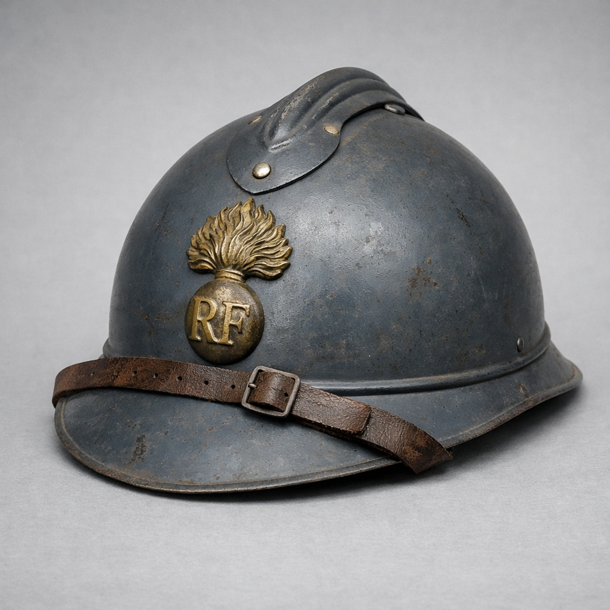

Le casque Adrian modèle 1915 est le premier casque métallique adopté par l’armée française. Conçu pour protéger les soldats des éclats d’obus, il devient rapidement un symbole du poilu et de la modernisation de l’équipement militaire français.
Introduit en 1915, le casque Adrian marque une rupture majeure dans l’équipement du soldat français. Avant lui, les troupes portaient encore le képi, totalement inadapté aux bombardements modernes. Le M15 est distribué à des millions de soldats durant la Première Guerre mondiale.
Après 1918, il reste en service dans l’entre-deux-guerres, parfois repeint ou modifié. En 1939–1940, il équipe encore les réservistes, les troupes territoriales et certains services.
Le casque Adrian M15 est devenu un symbole de la Grande Guerre. Sa silhouette est associée aux tranchées, aux poilus, et à la résistance des soldats français face à l’horreur industrielle du conflit.
Aujourd’hui, il occupe une place centrale dans les collections militaires et les musées, rappelant l’évolution de la protection individuelle et le courage des combattants.